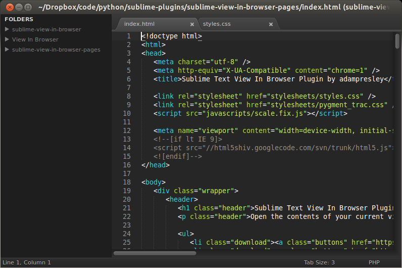
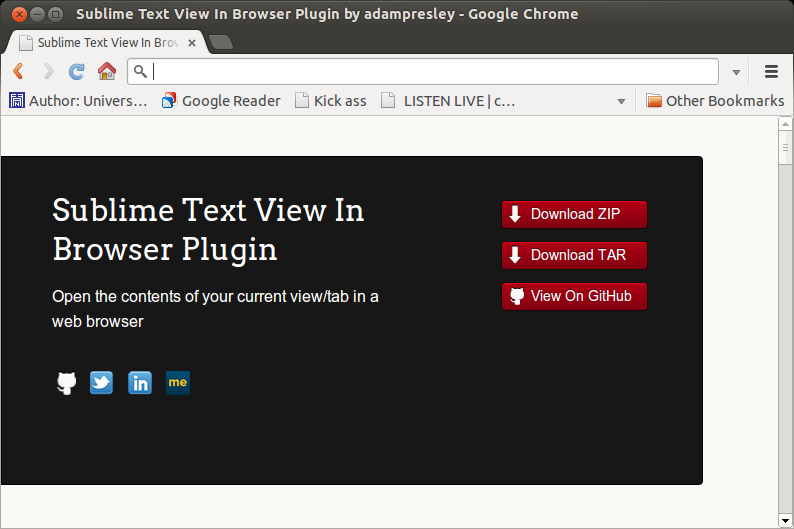

Sublime Text View In Browser Plugin
Open the contents of your current view/tab in a web browser
View In Browser
View In Browser is a Sublime Text plugin that will open whatever is in your current view/tab in your browser of choice. If the file you are working with is new and has not been saved then this plugin will save a temporary copy fo you and then open it up. View In Browser also works with local application servers to open your files using a URL prefix.
From this...
To this.
In just one keystroke.
CTRL + ALT + V
Where To Start
To get started the View In Browser wiki has guides to aide in installation, browser configuration, and local server project configuration.
Change History
- 07/03/2013:
- Changes to support Sublime Text 3 and Python 3 (#13)
- 06/15/2013:
- Backslashes in Windows are now converted to forward slashes when using a local server configuration. Closes #16
- 04/12/2013:
- Added support for muliple paths per browser configuration (jadient #14)
- 03/08/2013:
- Avoid loading Windows special folder references when on a Mac
- Added Mac Chrome to the supported browsers list
- 02/18/2013:
- Added ability to use Windows special folder references to browser commands. Closes #10
- 01/30/2013:
- All settings for this plugin now live in the file View In Browser.sublime-settings. This allows for a user to override them in their User directory. The old settings.json file is no longer used.
- 01/28/2013:
- Merged in change from imaginationac to remove menu nesting
- 12/26/2012:
- Added Linux Chromium to the supported browsers list
- 11/01/2012:
- Altered command to open Safari on Mac
- When invoked the current view is auto-saved
- 10/25/2012:
- New settings.json file to map browser/commands to OSes
- Plugin will use the specified browser to open files, or default to OS default when browser is unsupported
- Addressed encoding issue when calling open_new_tab
- Added ability to specify and respect local server config per project
- 05/21/2012:
- Temp file only created if view is unsaved
- 05/18/2012:
- Initial code
Contributors
- Dorian Patterson - imaginationac
- Neil Freeman - fitnr
- Michael MacDonald - schlick
- Jadient - jadient
License
The MIT License (MIT) Copyright (c) 2012 Adam Presley
Permission is hereby granted, free of charge, to any person obtaining a copy of this software and associated documentation files (the "Software"), to deal in the Software without restriction, including without limitation the rights to use, copy, modify, merge, publish, distribute, sublicense, and/or sell copies of the Software, and to permit persons to whom the Software is furnished to do so, subject to the following conditions:
The above copyright notice and this permission notice shall be included in all copies or substantial portions of the Software.
THE SOFTWARE IS PROVIDED "AS IS", WITHOUT WARRANTY OF ANY KIND, EXPRESS OR IMPLIED, INCLUDING BUT NOT LIMITED TO THE WARRANTIES OF MERCHANTABILITY, FITNESS FOR A PARTICULAR PURPOSE AND NONINFRINGEMENT. IN NO EVENT SHALL THE AUTHORS OR COPYRIGHT HOLDERS BE LIABLE FOR ANY CLAIM, DAMAGES OR OTHER LIABILITY, WHETHER IN AN ACTION OF CONTRACT, TORT OR OTHERWISE, ARISING FROM, OUT OF OR IN CONNECTION WITH THE SOFTWARE OR THE USE OR OTHER DEALINGS IN THE SOFTWARE.